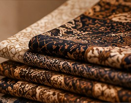
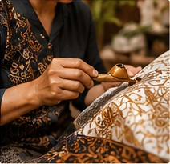

Tentang Kami
Mengenal Batik Adinata
Melestarikan budaya, menghadirkan keindahan dalam setiap karya.

Cerita Kami
Tradisi yang Terus Hidup
Batik Adinata hadir dengan semangat melestarikan warisan budaya Indonesia melalui karya batik yang berkualitas tinggi.
Kami percaya batik bukan sekadar kain, melainkan simbol keanggunan, identitas, dan kebanggaan bangsa. Kami ingin membuat keindahan ini semakin dekat dengan kehidupan sehari-hari.
Kenali Koleksi →Nilai yang Kami Jaga
WarisanMenghargai tradisi
KualitasMemperhatikan detail
DesainKlasik dan modern
Bangga IndonesiaCinta budaya lokal